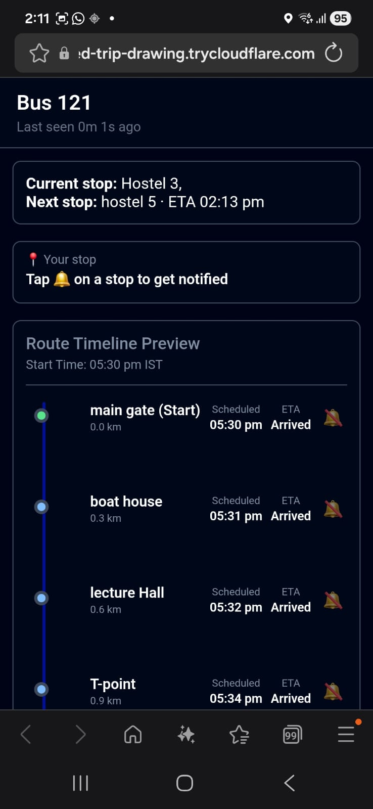
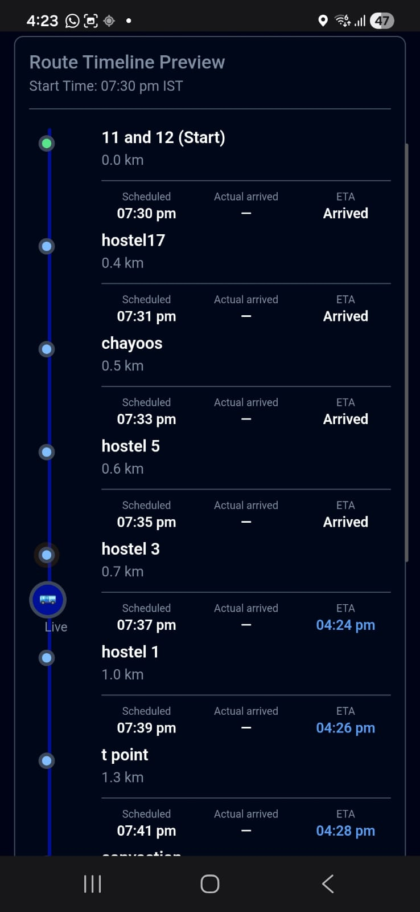
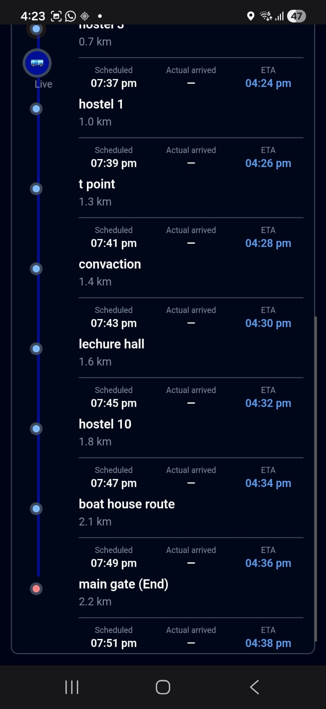
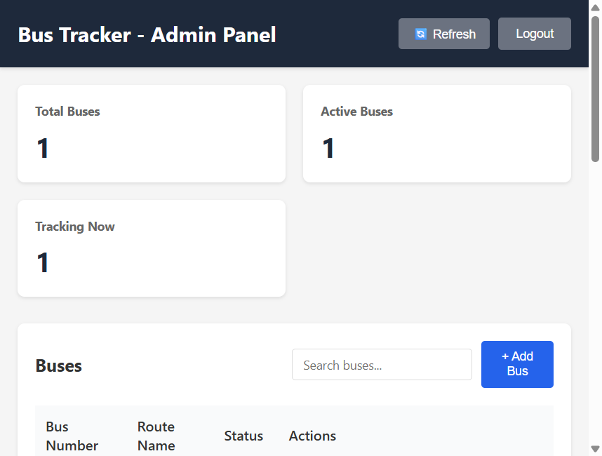
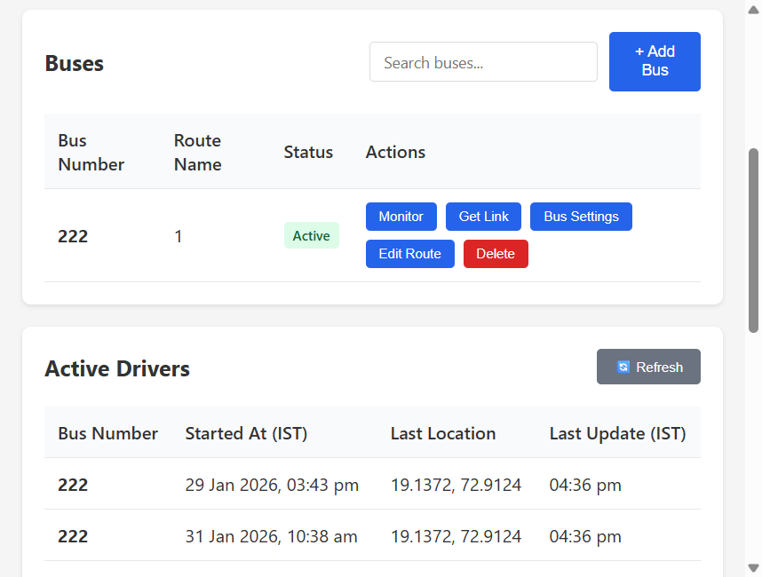
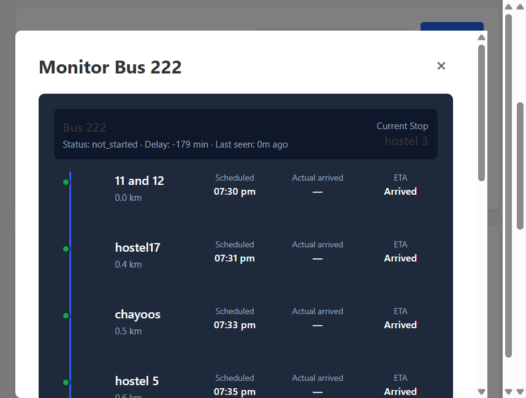
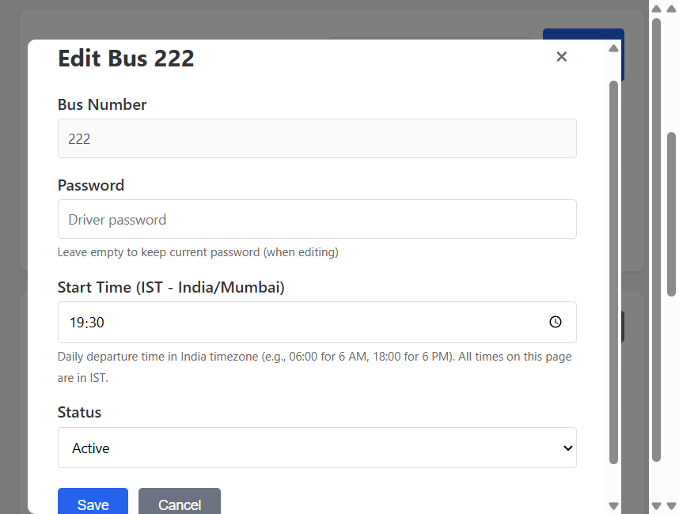
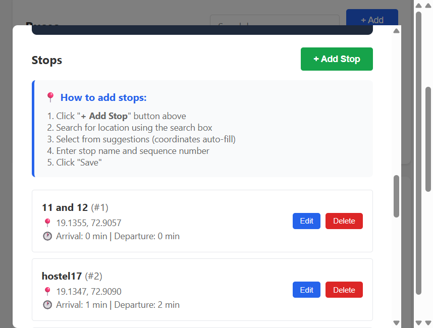

Bus Tracker — Overview for Bus Fleet Owners
What is Bus Tracker?
Bus Tracker is a system made mainly to improve passenger convenience, while also helping bus owners manage their fleet better.
- Passengers can see the live location of the bus on their phone.
- The app shows when the bus will arrive, so passengers don't have to wait without knowing.
- The passenger screen has a very clear and easy interface, which is the main strength of this system.
- Because passengers know where the bus is, confusion, crowding, and repeated phone calls reduce.
- This improves passenger satisfaction and trust in the transport service.
For the owner:
- Fewer complaints from passengers
- More professional service image
- Better control over daily operations
Passenger interface preview — These are screenshots taken during testing. This is how the passenger views the bus tracking page on their phone. They show how good the passenger interface is, how simple and understandable it is, and how easy and convenient it would be for passengers with our project.



The problem it solves
As a bus owner, you often face:
- Passengers call asking: "Where is the bus? When will it reach my stop?"
- No clear visibility: You cannot see where each bus is or if it is running late.
- Manual coordination: Drivers and passengers depend on calls or guesswork.
- Trust: Passengers prefer operators who show live bus locations and ETAs.
Bus Tracker solves this by giving you live tracking, automatic ETAs, and a simple way to share tracking with passengers.
Who uses the system?
There are three parts, each for a different role:
1. Admin Panel — For you (the owner/operator)
A web dashboard where you:
- Add and manage buses — Register each bus with a number and password.
- Define routes — Set the route name and add stops (with locations from Google Maps).
- Set schedules — Configure the daily start time and when the bus should reach each stop.
- Monitor live — See where each bus is on a map and its status (e.g. delay).
- Share tracking — Generate short tracking links or codes (e.g. abc123) for each bus.
You use this on a laptop or computer to manage your fleet and routes.
Admin panel interface — Screenshots of the admin dashboard: fleet overview, bus management, live monitoring, bus settings, and route/stops configuration.





2. Driver App — For your drivers
An Android app that each driver uses on their phone:
- Login — Uses the bus number and password you create in the admin panel.
- Start tracking — One tap to begin sending live GPS to the server.
- Runs in background — Continues tracking even when the screen is off or the app is minimized.
- No extra work — Once started, it runs until the driver stops it.
Drivers only need to log in and tap "Start Tracking" before the trip.
Note: If a bus already has a live tracker device attached (e.g. GPS unit, fleet tracking hardware), there is no need for this driver app. We can connect directly to that bus's live tracking system and use it. The driver app is only needed when no such device is installed. If any kind of device is already on the bus for live tracking, we can use that directly instead.
3. Passenger Page — For your passengers
A mobile-friendly webpage that passengers open on their phones:
- Track a bus — They use the link or tracking code you share.
- See the timeline — Stops in order with Scheduled time, Actual arrived time, and ETA.
- Live updates — The page refreshes as the bus moves.
- Status — Shows if the bus is on time, delayed, or at a stop.
Passengers can plan when to leave home and reduce waiting at stops.
How it works (in simple terms)
- You set up buses and routes in the admin panel — bus numbers, passwords, stops, and schedules.
- The driver starts the app before the trip — GPS is sent to the server every few seconds.
- The system computes where the bus is on the route, which stop it's near, and when it will reach the next stops.
- Passengers open the link you share — they see live ETAs and status without calling anyone.
Everything runs over the internet. You need the backend running and a tunnel (e.g. Cloudflare) so the driver app and passenger page can reach it from anywhere.
Benefits for you as a bus owner
| Benefit | How it helps |
|---|
| Fewer calls | Passengers see live ETAs instead of calling you or the driver. |
| More trust | Transparent tracking makes your service look more professional. |
| Fleet visibility | See which buses are active and where they are. |
| Simple sharing | One short link per bus that you can share on WhatsApp, posters, or your website. |
| Low cost | Uses your existing phones and internet; no special hardware. |
Quick summary
Bus Tracker gives you:
- Admin panel — Manage buses, routes, and schedules; monitor live; share tracking links.
- Driver app — Android app that sends live GPS with minimal effort from the driver.
- Passenger page — Mobile-friendly page with live ETAs and status for each bus.
You control everything from the admin panel; drivers only need to start the app; passengers get a clear, real-time view of when their bus will arrive.